EARLIER RECORDS
早期造像记录
新整理的专题已移到中国佛教艺术首页。
这里保留此前的作品记录和固定链接。
THE COLLECTION
在展厅里遇见
保留全貌，也留住每件作品的不同。
共 44 件造像
没有找到符合条件的作品。试试更短的关键词，或清除筛选。

纽约 · 大都会艺术博物馆02
水月观音
Bodhisattva Avalokiteshvara in Water Moon Form (Shuiyue Guanyin)
- 年代
- 辽，11世纪
- 材质
- 柳木，残存彩绘；多木块拼接
- 编号
- 28.56
横向伸展的手臂和斜垂的衣纹，围绕着稳定的躯干展开；未被彩绘覆盖的木色让结构更容易辨认。
作品札记与资料
馆方说明，这件作品以多个木块拼合，使用木榫和铁钉连接。水月形象在这里指向观音的净土补怛洛迦山；展厅里独立陈列的造像，原本属于宗教空间中的一个世界。
展签与馆方网页的拼接表述略有差异，此处依馆方现行记录。
基本信息据现场展签整理；照片 © Merton。


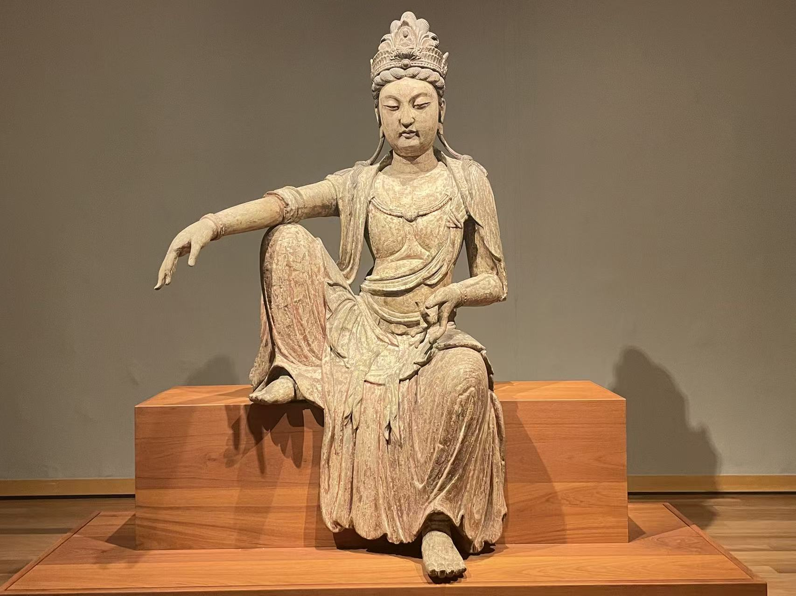
檀香山 · 檀香山艺术博物馆05
观音菩萨坐像
Guanyin Bodhisattva
- 年代
- 11世纪初
- 材质
- 木，残存彩绘
- 编号
- 2400
手臂平缓展开，足部垂落；正面观看时，衣纹和两腿形成清楚而舒展的轮廓。
作品札记与资料
展签记载作品于1927年购入，并将它视为较早的自在坐观音实例。
基本信息据现场展签整理；照片 © Merton。

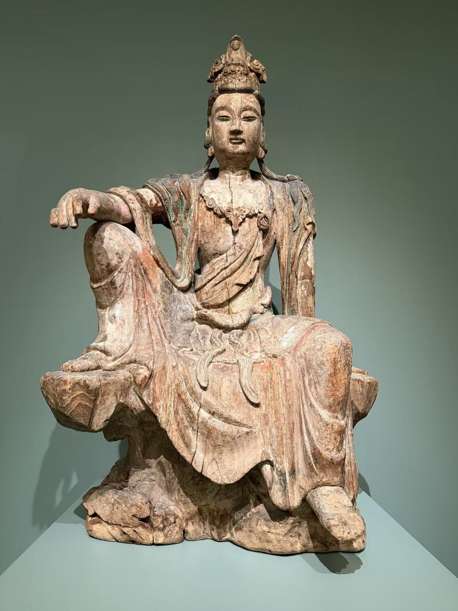
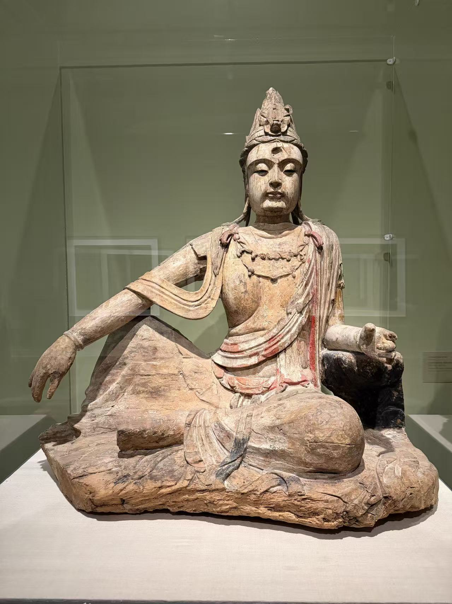
波特兰 · 波特兰艺术博物馆08
观音菩萨坐像
Avalokitesvara (Guanyin)
- 年代
- 13—14世纪
- 材质
- 木，残存彩绘
- 编号
- 38.52
一手自然下垂，另一手撑在身侧的岩座上；颈肩处的红彩与身体的木色形成对照。
作品札记与资料
展签注明以Ella M. Hirsch基金购藏，更早的流转记录尚不明确。
基本信息据现场展签整理；照片 © Merton。
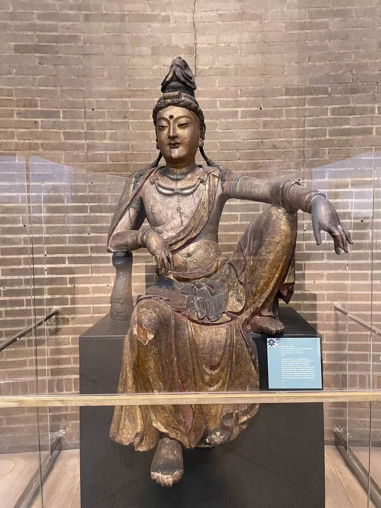

堪萨斯城 · 纳尔逊－阿特金斯艺术博物馆10
漆金观音坐像
Figure of Bodhisattva Guanyin
- 年代
- 元或更晚；表层或属18—19世纪
- 材质
- 木芯、泥层与金漆
- 编号
- 35-36
掌心撑地，另一臂搭在膝部；宽大的衣袖与平滑的金色表面，使轮廓显得柔和。
作品札记与资料
展签说明，这尊像传统上断为元代，但外层有机材料的科学分析指向1700—1900年。内部可能较早，却尚未得到检测。这可能是一件后来重新覆泥、髹漆的旧像，断代仍需保留余地。
基本信息据现场展签整理；照片 © Merton。

巴尔的摩 · 沃尔特斯艺术博物馆11
观音菩萨坐像
Bodhisattva Guanyin
- 年代
- 14世纪末—15世纪，明
- 材质
- 夹纻干漆，填料漆层、金与彩绘（馆方材料栏：bulked lacquer）
- 编号
- 25.256
金色面庞与暗红衣裙相映，手指与长袖形成流畅的曲线。
作品札记与资料
馆方说明，这尊像以浸漆织物包覆泥芯，硬化后脱去内芯，连纤细的手指也是中空的；X光检查还发现内壁有含朱砂的颜料。它经巴黎卢芹斋公司之手，由多丽丝·杜克于1937年10月7日购得，2006年由其慈善基金会捐赠沃尔特斯。
馆方材料栏记作 bulked lacquer，工艺说明则描述了浸漆织物脱芯的中空结构。
基本信息据现场展签整理；照片 © Merton。

巴黎 · 吉美亚洲艺术博物馆12
观音菩萨坐像
Le bodhisattva Avalokiteshvara (chinois : Guanyin) assis
- 年代
- 宋或金
- 材质
- 石灰岩，残存彩绘
- 编号
- 未辨清
头部微微倾斜，左手抬至肩旁，双腿屈置于身前；石面保留衣褶的转折与残彩。
作品札记与资料
现有展签记录将它称为“观音菩萨坐像”。坐姿是观看形体的线索，水月观音则是需要结合馆方定名与图像背景判断的题材；两者不能仅凭“坐着”便画上等号。这件作品暂归入石雕单元，继续观察手势、衣纹与身体的关系。
藏品编号尚未辨清；目前尚无足够资料确认水月观音或自在坐的具体定名。
基本信息据现场展签整理；照片 © Merton。
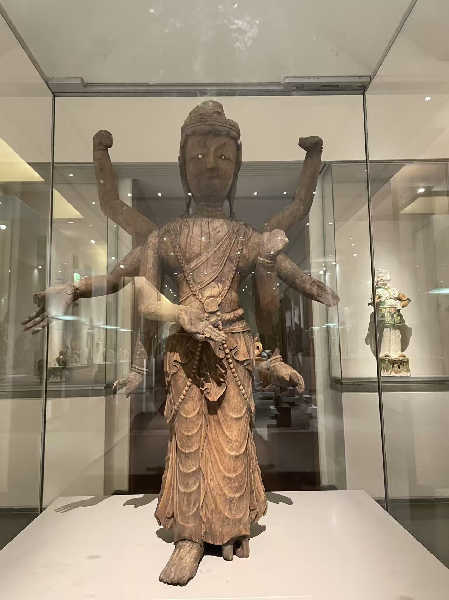
巴黎 · 吉美亚洲艺术博物馆13
八臂观音
八臂观音（展签中文名）
- 年代
- 唐，9世纪末—10世纪初；敦煌
- 材质
- 杨木、象牙、黏土与稻草复合材料，残存彩绘
- 编号
- EO 1119
多臂向身体两侧展开，持物与头顶的部分构件已经缺失。
作品札记与资料
展签记载由伯希和考古队于1906—1909年收购。馆方根据敦煌同类图像推测，它可能原为十一面八臂观音；附加的十个头部应曾固定于头顶的复合材料结构上。
基本信息据现场展签整理；照片 © Merton。
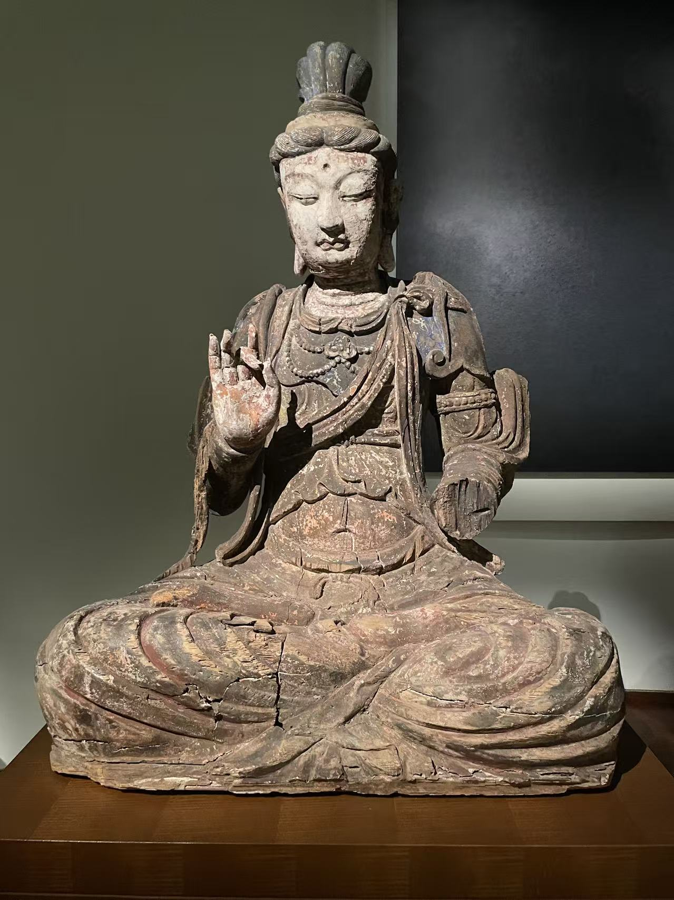
巴黎 · 吉美亚洲艺术博物馆14
作说法手势的菩萨坐像
Bodhisattva assis, esquissant le geste d’argumentation
- 年代
- 10世纪初，五代或辽；中国北方
- 材质
- 木，残存彩绘
- 编号
- MA 6995
双腿盘坐，双手在胸前作手势；大片脱落的表层与深色木胎并存。
作品札记与资料
展签记录其于2002年入藏，得到Crédit Agricole Indosuez支持。馆方题名为“菩萨”，具体尊格未定。
基本信息据现场展签整理；照片 © Merton。
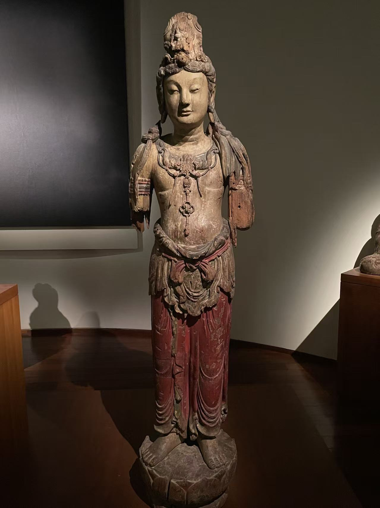
巴黎 · 吉美亚洲艺术博物馆15
观音菩萨立像
Le bodhisattva Avalokiteshvara (chinois : Guanyin)
- 年代
- 10—11世纪，五代或宋；中国北方
- 材质
- 彩绘木雕
- 编号
- MG 19103
修长的身体与近乎垂直的衣裙形成庄严的正面形象，裙部仍留有大片红彩。
作品札记与资料
展签注明1939年购入。与自在坐像并看，可以留意身体重心和手臂位置的变化。
基本信息据现场展签整理；照片 © Merton。

纽约 · 大都会艺术博物馆16
胁侍菩萨像
Attendant Bodhisattva
- 年代
- 10—11世纪，五代或辽
- 材质
- 柳木，底层与彩绘；单木块雕刻
- 编号
- 28.122.1
头冠、肩上发辫和胸前系结仍很清楚；残损后的半身形态，突出躯干的体量。
作品札记与资料
展签认为它很可能原属一组大型三尊像，佛居中央，两侧各有胁侍。今天看到的单件残像，原本可能与其他造像形成关系。
基本信息据现场展签整理；照片 © Merton。

堪萨斯城 · 纳尔逊－阿特金斯艺术博物馆17
菩萨立像
Standing Bodhisattva
- 年代
- 金；中国山西
- 材质
- 木，彩绘与贴金
- 编号
- 51-42
衣带沿身体翻转，深刻的衣纹在展厅光线下形成鲜明的明暗。
作品札记与资料
像腹里的重妆记录
这尊菩萨像背的封闭空腔里，保存着一份折叠文书。瞿炼刊出的释文记至正九年五月，即1349年：当时重妆的是佛与菩萨三尊像。雕刻之后，重新施彩、整修与供奉还在继续；这张纸留下的，是造像在元代被照料的一次记录。
 查看原图 ↗
查看原图 ↗装藏文书：九行释文与今译
据瞿炼刊布释文分九行录入，保留“弟”“並”等原字；断行不等于现代句读。
释文
大元国弟十帝至正九年五月日重 妆佛菩萨圣像三尊 待诏冯小大补 妆待诏本县辛村並南样社 辛待诏景待诏等 本寺僧银尊宿琛尚座 体讲主演讲主爱讲主 並大众等三十众施工 敕赐太云禅院置
今译
元至正九年五月，为佛、菩萨三尊圣像重新妆銮。记名者包括待诏冯小大，以及本县辛村、南样社的辛、景姓补妆工匠，另列本寺僧人与大众。末尾说明由敕赐太云禅院置办。
“重妆”指重新妆銮、施彩等维护。“待诏”在这里是工匠称谓，记录的是此次元代重妆的参与者。“补”与下一行的“妆”要连读；人名、僧职相连，今译只转述大意。“三尊”没有交代每尊的具体身份。
从太云禅院找到泰云寺
瞿炼将文中的太云禅院、南样社，与广胜寺及水神庙碑记对照，考证为洪洞县石桥村的泰云寺。这让一尊离开殿堂的木像，重新有了可以追寻的供奉地点。
木雕与壁画之间的工匠线索
1324年水神庙壁画题记中的南样景彦政，与1349年墨书中的景待诏，提示了地方匠户的联系。瞿炼据此讨论绘画和造像的关联；这还不能确定两人就是同一个人。
寺史旁读：慧宽托寺祭祖
论文还引1261年碑记：慧宽在亲属亡故后，捐田给太云禅院，并托寺僧祭祖。这是寺史背景，并非像内又一份文书。
研究出处
瞿炼：《金元时期晋南“汾河木雕流派”的风格及演变》，《故宫博物院院刊》2017年第2期（总190期），页71—80；本尊重点见页73—75，图三、图四见页74。
作品仍依馆方列为金代。馆方展签和网页记1348年及“大云寺禅堂”；瞿炼刊布墨书则释为1349年、太云禅院。此处研究札记采用后者，同时保留现场展签供对照。重妆日期不等于雕刻日期。
现场展签 · 51-42

基本信息据现场展签与馆方记录整理；现场照片 © Merton；墨书图来源见图注。
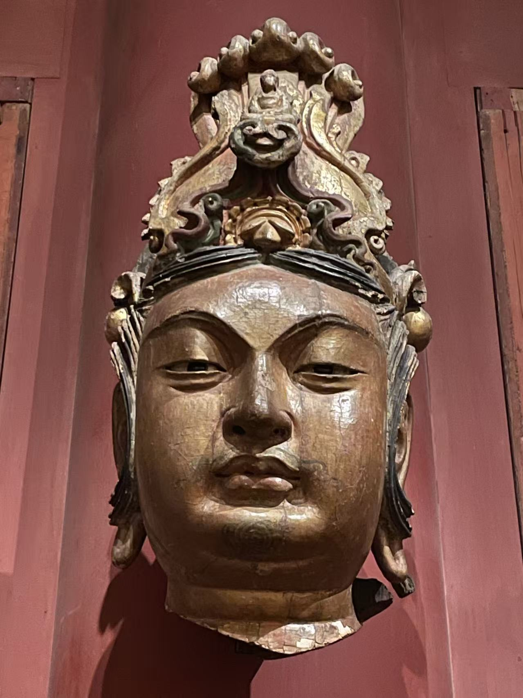
堪萨斯城 · 纳尔逊－阿特金斯艺术博物馆18
观音菩萨头像
Head of Guanyin Bodhisattva
- 年代
- 金，13世纪；中国山西
- 材质
- 木，贴金与彩绘
- 编号
- 62-2
近距离可以看见面部的金色表层、眼睑的弧线，以及高冠中端坐的小佛。
作品札记与资料
展签以冠中阿弥陀佛的形象作为辨认观音的依据。头像单独保存下来，也让原本位于高处的细节进入平视范围。
现场展签 · 62-2

基本信息据现场展签整理；照片 © Merton。

堪萨斯城 · 纳尔逊－阿特金斯艺术博物馆19
观音菩萨立像
Guanyin Bodhisattva
- 年代
- 元
- 材质
- 彩绘木雕
- 编号
- 59-70
身体略向一侧转动，胸前系结与肩头垂发加强了这个方向感。
作品札记与资料
展签认为，它可能曾站在三尊造像中央主尊的一侧；冠中的小佛是馆方辨认为观音的依据。
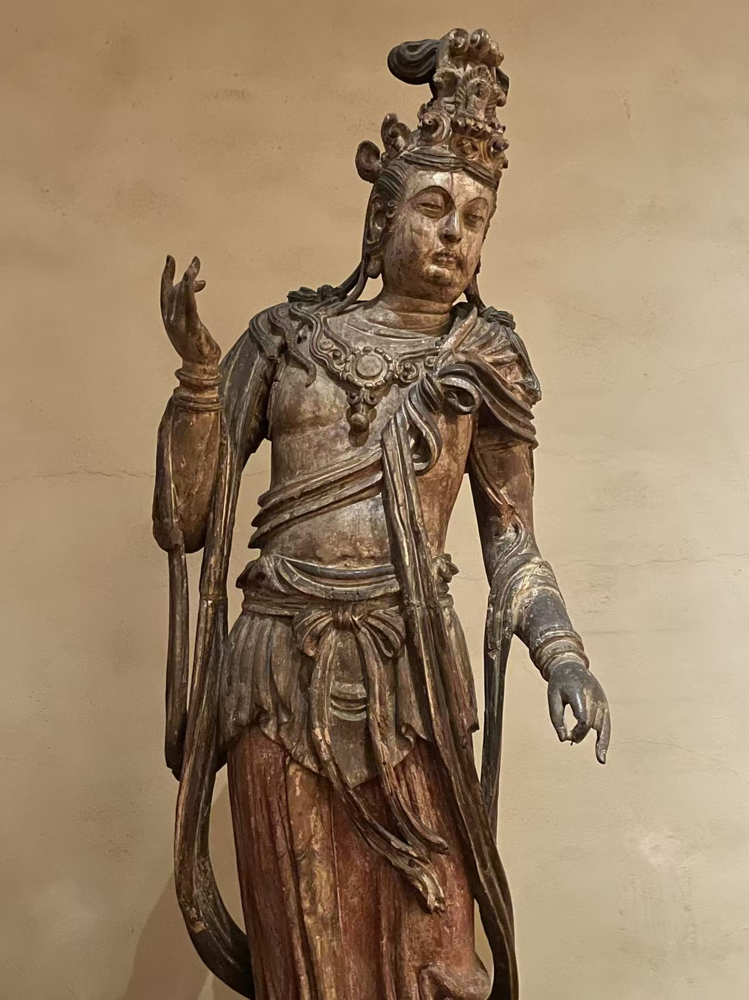
查看大图 ↗现场展签 · 59-70

基本信息据现场展签整理；照片 © Merton。


克利夫兰 · 克利夫兰艺术博物馆22
十一面观音
Eleven-Headed Guanyin
- 年代
- 1100—1200年，北宋晚期至金
- 材质
- 木，彩绘与切金
- 编号
- 1981.53
层叠的小头部位于主面之上，长裙的红色与腰间金色装饰依然可见。
作品札记与资料
这件作品提供了观音另一种形象：多面强调其宗教身份，与自在坐观音的舒展姿态形成对照。
四处局部 · 面容、冠饰与衣纹


现场展签 · 1981.53

基本信息据现场展签整理；照片 © Merton。

西雅图 · 西雅图艺术博物馆23
观音侍童
Attendant to Guanyin
- 年代
- 16—17世纪，明
- 材质
- 木，彩绘与贴金
- 编号
- 48.53
小像双手在胸前合拢，表情活泼；衣服上的凸起装饰保留了类似织绣的效果。
作品札记与资料
展签称其为“金童”。背部封藏空间中留有小铜镜、藏文纸页和彩色织物，其中部分织物象征身体器官。这使造像内部也成为值得阅读的部分。
基本信息据现场展签整理；照片 © Merton。


西雅图 · 西雅图艺术博物馆25
降龙罗汉
Dragon Tamer Luohan
- 年代
- 约14世纪，元
- 材质
- 彩绘木雕
- 编号
- 36.13
紧张的目光、微张的嘴与屈坐的身体，使这件罗汉像显得富于动作感。
作品札记与资料
展签将其解释为以禅定与神通召来、制伏龙的罗汉形象，并联系祈雨与收成的信仰。与观音的从容并看，表情的差异尤其明显。
基本信息据现场展签整理；照片 © Merton。
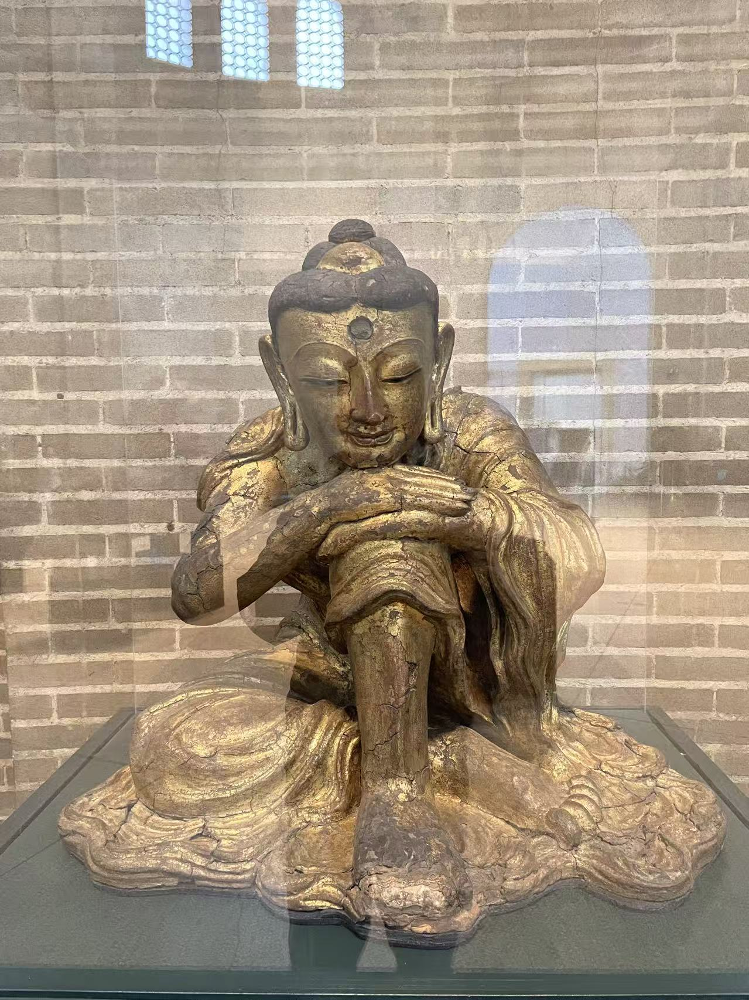
费城 · 宾夕法尼亚大学考古与人类学博物馆26
释迦牟尼像
Shakyamuni Buddha
- 年代
- 元，1271—1368年
- 材质
- 干漆
- 编号
- C405A
身体前倾，双臂搭在抬起的膝部；脸上的微笑与清瘦的躯干形成对照。
作品札记与资料
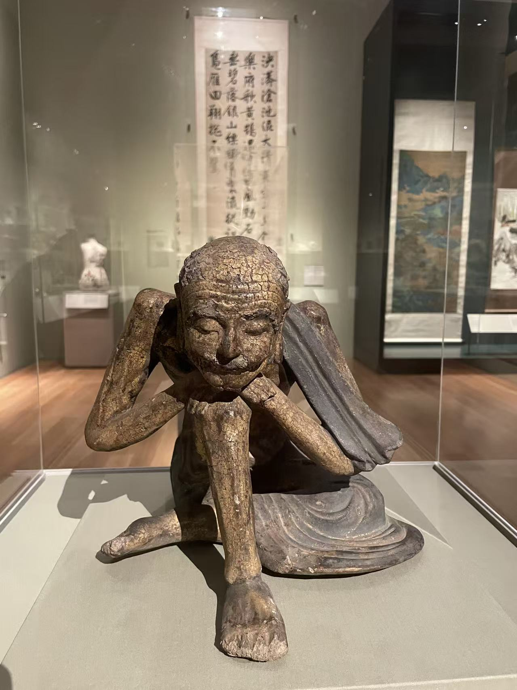
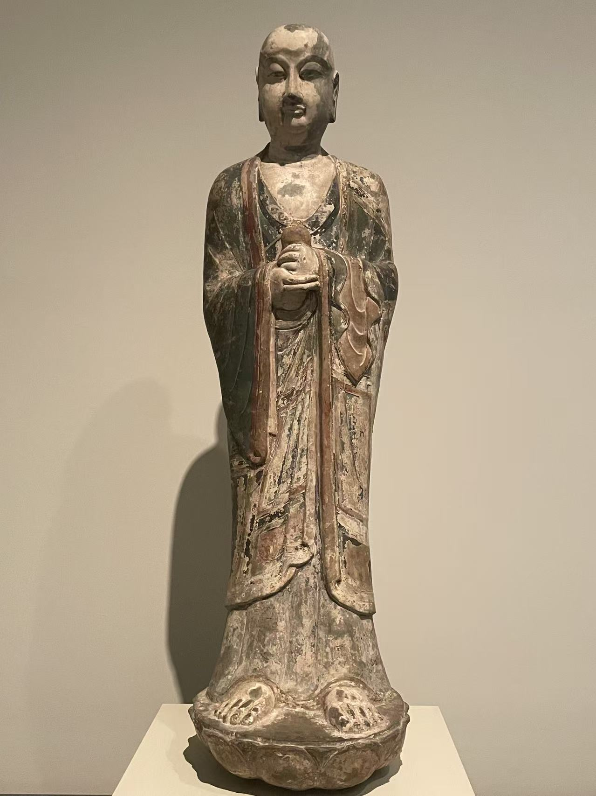
纽约 · 大都会艺术博物馆28
僧人像（可能为阿难）
Monk, probably Ananda (Anantuo)
- 年代
- 唐，8世纪
- 材质
- 石灰岩，残存彩绘
- 编号
- 52.41
双手在胸前捧持物品，僧衣贴合身体；面部没有菩萨的高冠和繁复首饰。
作品札记与资料
馆方认为它很可能表现阿难，原本属于包含佛、菩萨与护法的组合。
基本信息据现场展签整理；照片 © Merton。


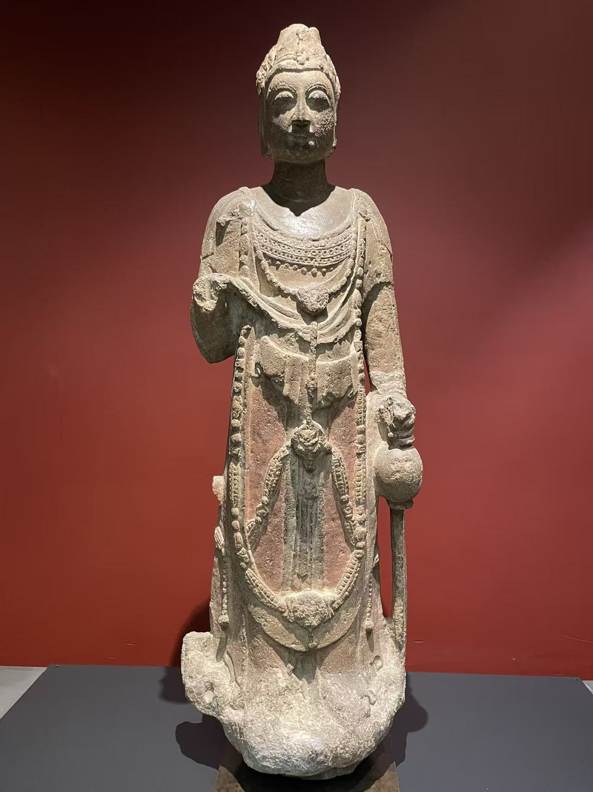
巴黎 · 赛努奇博物馆31
观音菩萨立像
Bodhisattva Avalokiteśvara (Guanyin pusa)
- 年代
- 隋，581—618年
- 材质
- 石
- 编号
- M.C. 6020
两侧衣带与身前璎珞近乎对称，手中的瓶状物仍可辨认。
作品札记与资料
展签注明1920年购入。石雕的正面性与装饰节奏，可以作为观看后世木雕的一个参照。
基本信息据现场展签整理；照片 © Merton。
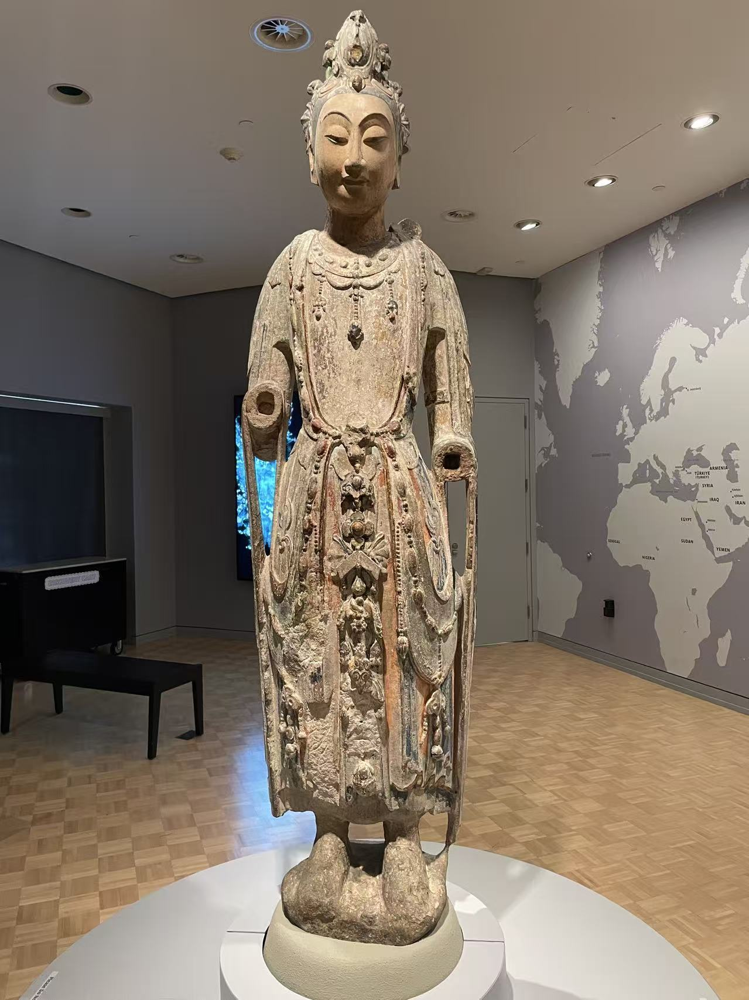

堪萨斯城 · 纳尔逊－阿特金斯艺术博物馆33
菩萨立像
Bodhisattva
- 年代
- 明，1368—1644年
- 材质
- 青铜，残存贴金
- 编号
- 39-26
花枝、手势和繁复首饰突出于身体之外；深色铜面使轮廓格外清楚。
作品札记与资料
展签指出，持莲花的姿态接近莲花手菩萨，但冠上日月图案也可能指向其他尊格，具体身份尚不确定。
基本信息据现场展签整理；照片 © Merton。
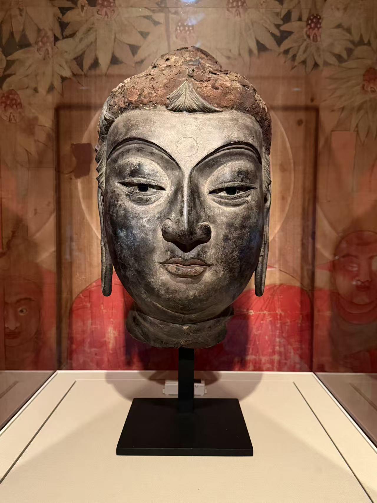
休斯顿 · 休斯顿美术馆34
佛首
Buddha Head
- 年代
- 唐，8世纪
- 材质
- 中空夹纻干漆
- 编号
- 展签未列编号
低垂的双眼与圆润的面颊，保留着大型佛像的庄严感。
作品札记与资料
展签记载，这颗佛首以中空干漆制作，眼睛嵌有深色玻璃。原像身体已失，馆方认为它更可能属于一尊坐佛。作品属于 Xuzhou Collection of Buddhist Art，曾在休斯顿美术馆展出。
作品属于 Xuzhou Collection of Buddhist Art，在休斯顿美术馆展出。
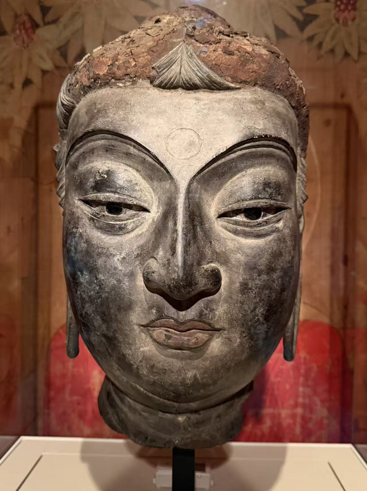
查看大图 ↗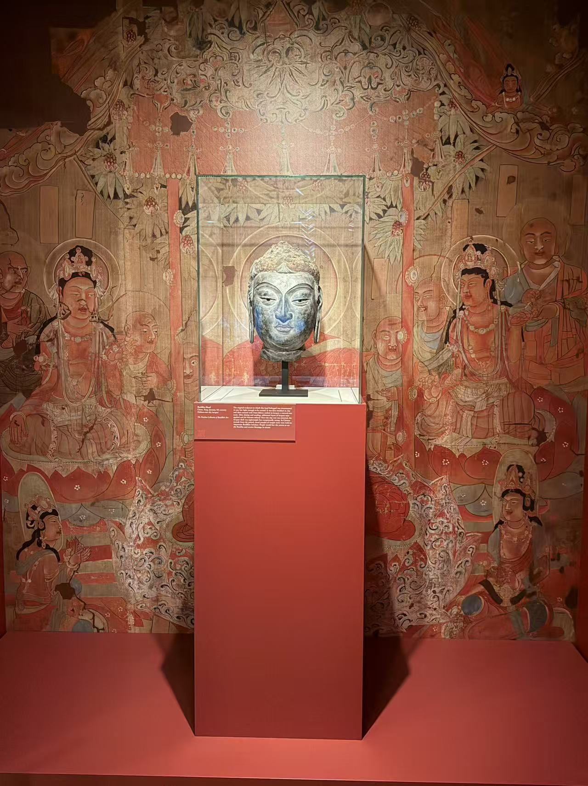
查看大图 ↗基本信息据现场展签整理；照片 © Merton。
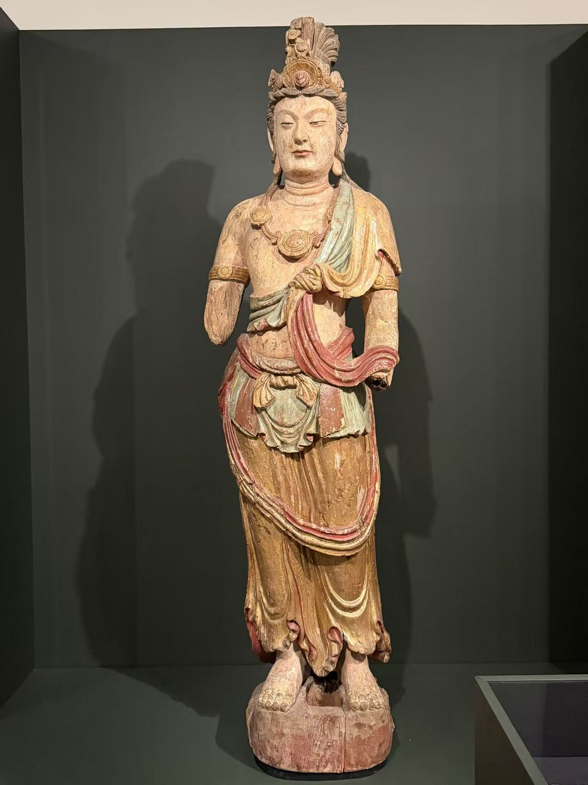
新奥尔良 · 新奥尔良艺术博物馆35
观音立像
Guanyin
- 年代
- 金，12世纪；有后世修整
- 材质
- 木、底料与彩绘
- 编号
- 85.209
浅色面容与衣间残留的红绿色彩，让断臂后的身姿仍显得鲜明。
作品札记与资料
1985年，这尊像由 Jun Tsei Tai 捐赠入馆后，检查人员在像内两个空腔中发现了供养文书与12世纪佛经。尽管外表经过后世改塑，这些藏在内部的文献仍为其金代断代提供了依据。下面的《佛说生天经》，就是随像发现的经卷之一。
藏在观音腹中的《佛说生天经》
金，贞元三年（1155） · 山西 · 纸本木刻印刷 · 新奥尔良艺术博物馆，85.209.4。卷面题名作“佛說生天經”，英文展签译为 Heaven Ascending Sutra。
一张纸怎样留下一个年代
全貌照片左端的供养题记留下“贞元三年三月”的纪年。据展签，它是这尊观音像内发现的最早文献。经卷有年款，雕像表面却经历过后世修整，两者放在一起，可以帮助理解作品的不同时间层次。不过，1155年是这份经卷的纪年，不能直接当作木雕的制作年或经卷封入像内的年份。
卷首为何画着地藏
照片右端是卷首图，旁边直接刻有“地藏菩萨”的题榜；持杖人物、建筑和云气，与中间密集的经文形成鲜明对照。馆方展签将地藏与救济地狱众生的愿行联系起来；黄士珊的研究进一步将图中场景解读为地藏立于地狱牢狱入口。观音像内保存着带地藏图像的经卷，让我们看到同一件造像中可以汇集不同的信仰实践。
从经文读到供养人的愿望
卷末不只有日期，还能看到长命村刘姓供养人、父母、后世与家眷，以及祈愿安乐的文字；另有出资刻印的记载。这些具体的愿望，让一尊失去原来寺院环境的造像重新与人的生活发生联系。经文本身还反复出现“不食肉”“不杀生”“不邪淫”“不饮酒”等劝诫。
造像与经卷基本信息据现场展签，图像解释参见下列研究文献第153页、图27–28。文献图录中的经卷编号与展签有异，展签记为85.209.4。
 查看大图 ↗
查看大图 ↗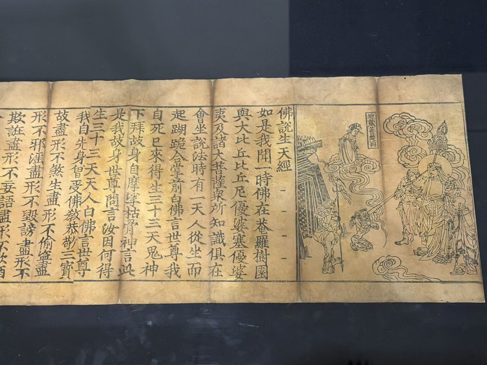
查看大图 ↗ 查看大图 ↗
查看大图 ↗基本信息据现场展签整理；照片 © Merton。
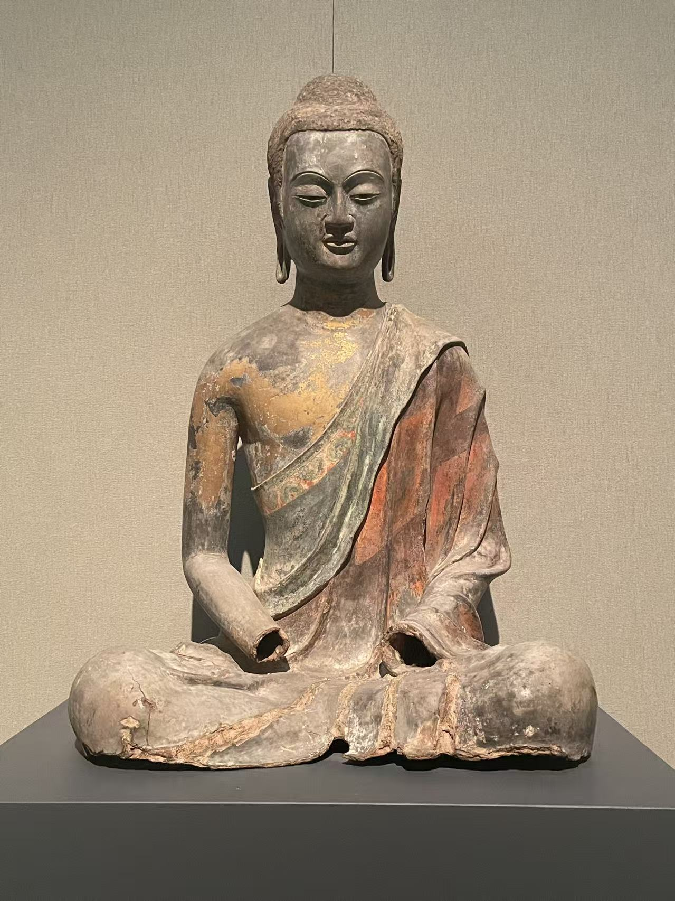
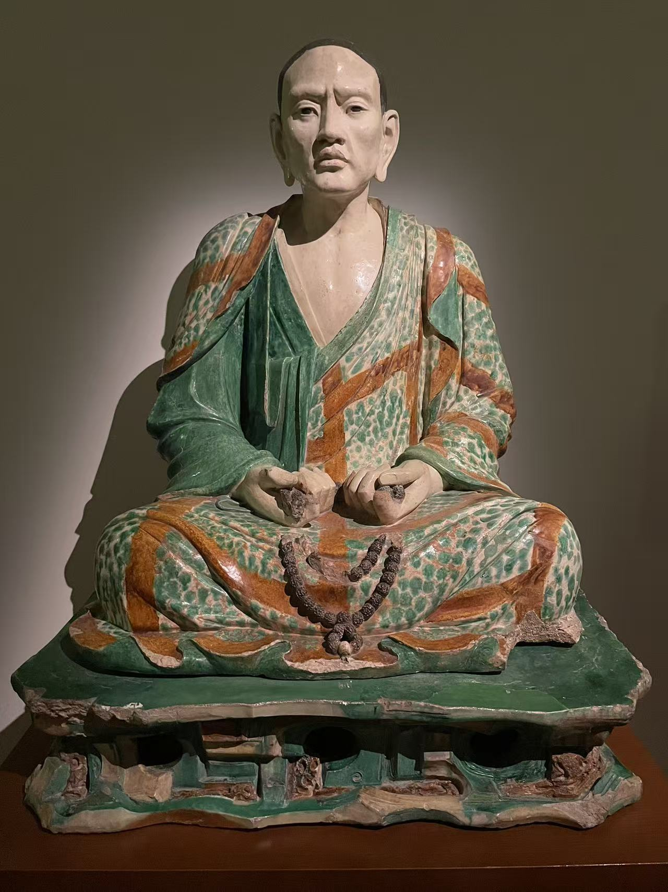
巴黎 · 吉美亚洲艺术博物馆37
三彩罗汉坐像（或为跋陀罗尊者）
Arhat Tamrabhadra (?)
- 年代
- 辽或金，10—13世纪
- 材质
- 陶，三彩釉
- 编号
- MA 6323
面容清瘦，双手停在身前；绿釉袈裟上的斑驳色块，与裸露胸口的浅色形成对照。
作品札记与资料
现场展签记载，这尊像由香港的徐展堂（T. T. Tsui）于1997年捐赠，并以问号标注“佛陀第六弟子”，具体尊者身份尚不确定。
展签仅标中国东北部，未直接写易县。这尊像通常与易县组像并置讨论，具体组属尚不确定。
基本信息据现场展签整理；照片 © Merton。
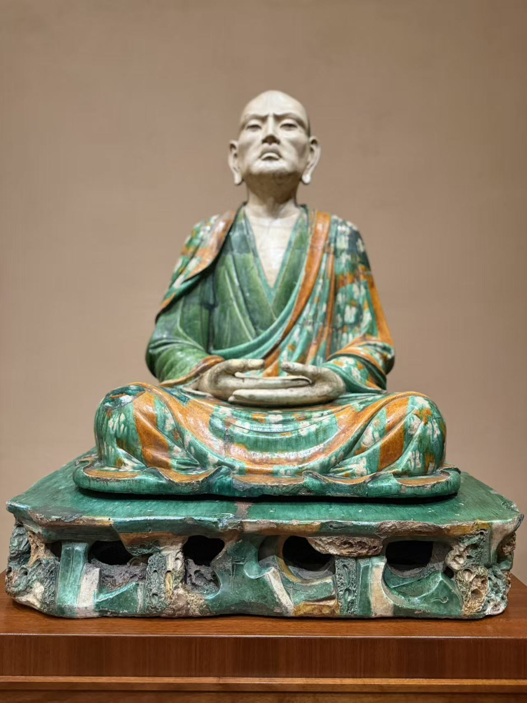
堪萨斯城 · 纳尔逊－阿特金斯艺术博物馆38
三彩罗汉坐像
Luohan
- 年代
- 辽至金，907—1234年
- 材质
- 陶，三彩铅釉
- 编号
- 34-6
双手叠放在膝前，头略抬起。宽厚的衣褶铺满双腿，岩座的孔洞让沉稳的坐姿多了一层变化。
作品札记与资料
馆方将其记录为河北易县的辽金时期作品，由威廉·罗克希尔·纳尔逊信托出资购入。现场展签特别指出双手的禅定姿势，以及面部近似肖像的刻画。
基本信息据现场展签整理；照片 © Merton。
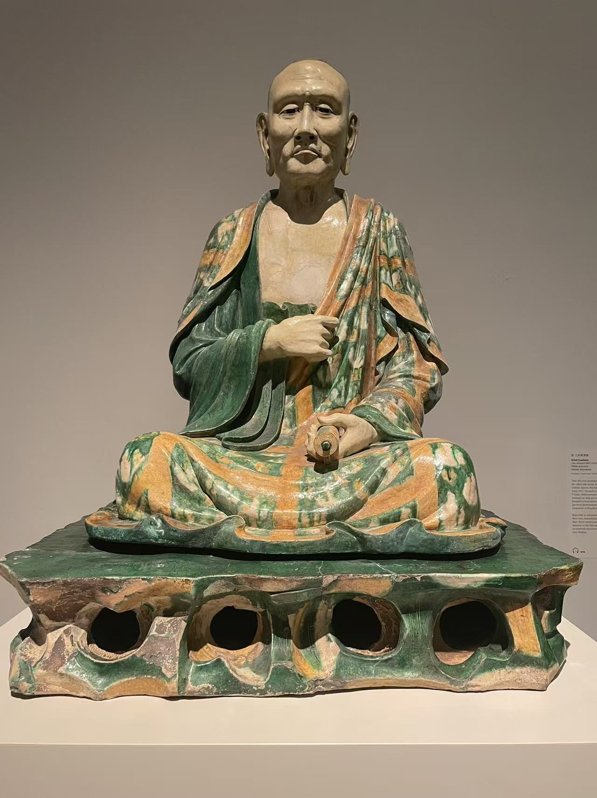
纽约 · 大都会艺术博物馆39
三彩罗汉坐像（21.76）
Arhat (Luohan)
- 年代
- 辽，约1000年
- 材质
- 炻器，三彩釉
- 编号
- 21.76
眉眼和嘴角收得很紧，一只手抬到胸前；衣纹间的绿、黄与乳白釉色，把身体的起伏衬了出来。
作品札记与资料
这尊像于1921年以 Frederick C. Hewitt Fund 购入。馆方把它与河北易县传出的罗汉组像联系起来，并据北京附近古窑址的考古材料，将年代定在10世纪末至11世纪。
“易县”指传世来源线索，并不等于已经确定原来的寺院或制作窑场。
基本信息据现场展签整理；照片 © Merton。
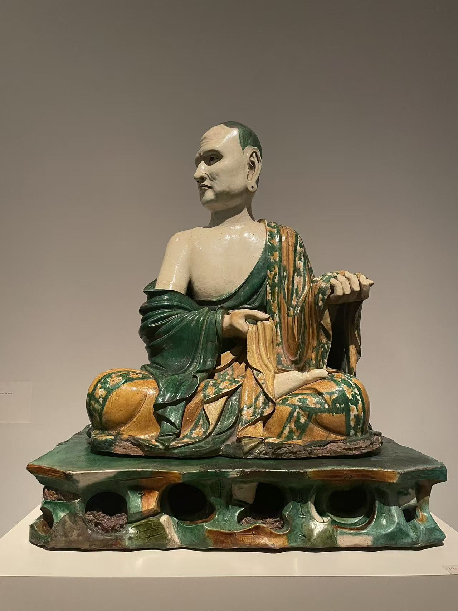
纽约 · 大都会艺术博物馆40
三彩罗汉坐像（20.114）
Arhat (Luohan)
- 年代
- 辽，约1000年
- 材质
- 炻器，三彩釉
- 编号
- 20.114
头转向一侧，裸露的肩胸与厚重的袈裟相接；抬起的手与转头的动作，使它和另一尊大都会罗汉很不一样。
作品札记与资料
大都会以 Fletcher Fund 于1920年购入此像。与另一尊馆藏放在一起看，最直接的差别在头部转向、手势和衣袍覆盖身体的方式。
基本信息据现场展签整理；照片 © Merton。
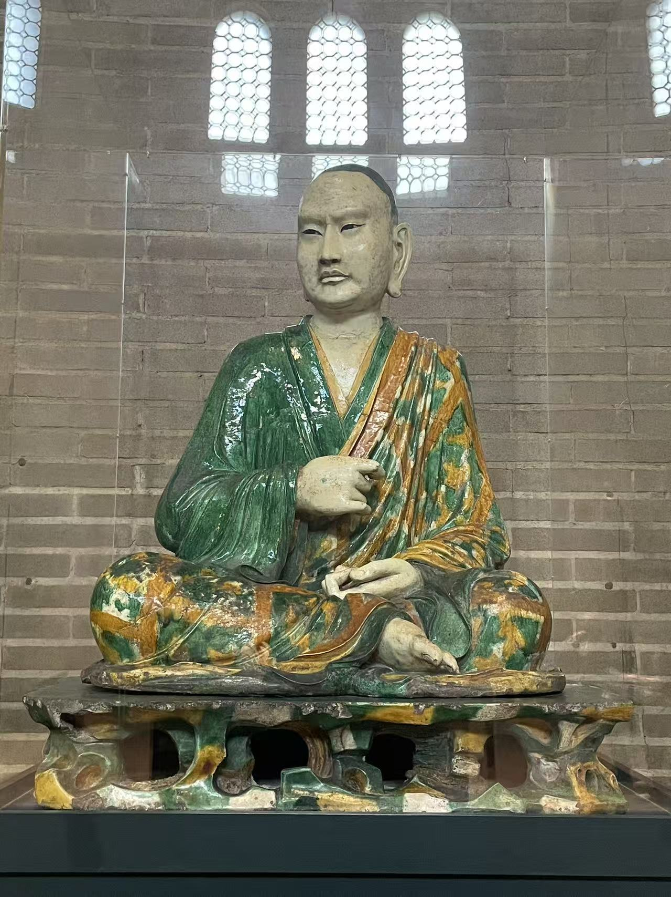
费城 · 宾夕法尼亚大学考古与人类学博物馆41
三彩罗汉坐像（宾大）
Luohan
- 年代
- 辽或金，10—13世纪
- 材质
- 陶胎，三彩釉
- 编号
- C66A（像身）、C66B（底座）
右手抬至胸前，左手停在膝上；深绿内衣与黄绿交错的袈裟，把两侧手臂的动作分得很清楚。
作品札记与资料
脸部的浅色釉与衣袍的深绿形成鲜明对照。眉间微蹙，眼睛细长，嘴唇略微张开；胸前的手势让这尊像与纳尔逊双手作禅定姿势的罗汉有了不同的节奏。袈裟斜搭在左肩，绿釉内衣覆盖右肩与右臂，衣褶一直延续到交叠的双腿。脚下的岩座开出大小不一的孔洞，黄、绿釉色沿着起伏的表面流动。
1914年来到费城
宾大馆藏记录注明，此像于1914年购自巴黎的 Worch。馆方学者 Nancy Shatzman Steinhardt 在2010年的研究札记中进一步记述：古董商 Edgar Worch 安排它于1913年离开中国，博物馆在次年6月购入。照片中这张具体的面孔，也由此有了一段可以追溯的收藏经历。
宾大馆刊：The Luohan that Came from Afar ↗
像身与底座，分别入藏
展签上的 C66 A、B 分别对应像身和底座。像身的购藏年份是1914年，底座的馆藏记录则写作“卢芹斋捐赠，1916年”。今天连成一体的轮廓，保留着两笔不同的入藏记录；这也提醒人把造像与承托它的岩座分别看一遍。
现场展签将来源写作“可能出自河北易州附近洞窟”，并保留辽或金的断代。馆方研究也指出，原属寺院、组像总数与确切制作年代仍有疑问；不把十六或十八尊视为已确认的原组数量。
基本信息据现场展签整理；照片 © Merton。

圣安东尼奥 · 圣安东尼奥美术馆42
十三世纪木雕观音坐像
Guanyin Bodhisattva (Avalokiteshvara)
- 年代
- 13世纪中叶；展签列宋—元
- 材质
- 木，残存颜料与金
- 编号
- 85.58
端坐的身体修长，冠中小佛、胸前璎珞与垂落衣裙依次展开；残彩与裸露木面在同一表面相遇。


巴尔的摩 · 巴尔的摩美术馆43
水月观音
Water-Moon Guanyin (Shuiyue Guanyin)
- 年代
- 明，15世纪
- 材质
- 金属合金，原有鎏金及蓝、红彩绘
- 编号
- BMA 1944.80
右前臂横搭在高起的膝上，手指向下垂落；左手撑住座面，衣裙沿另一条腿落向赤足。面部的金色与深暗的像身相接，让低垂的目光格外清楚。
作品札记与资料
从宋金木雕转到这尊明代金属像，熟悉的一膝高起、单手后撑仍在，衣褶却形成另一种厚重而连贯的节奏。胸前的璎珞、臂上的饰件与足边层叠的衣缘，可以从正面看，再绕到侧面重看。这里的舒展不只是一个姿势：手臂把身体向外打开，微低的头又把视线收了回来。
水边观月的形象
馆方明确将本件定名为水月观音，并把这一形象联系到水畔岩窟与月影。画面中的山水，在雕像中可以收束为身体的姿态和坐处；这尊像保留了可与木雕主线比较的手臂、膝部与撑座关系。
观看与收藏
本件由作者在巴尔的摩美术馆亲见、拍摄，展签列入藏资助为 Julius Levy Memorial Fund。它与同城沃尔特斯艺术博物馆的干漆观音是不同作品；具体参观日期、原供奉寺院及完整流传记录暂未确认。
现场展签采用“金属合金”；馆方2015年教育资料称青铜。本页沿用实拍展签，未据此推定合金比例。展签所列河北“Wan Bing County”为地域记录，目前未据此认定具体出土地点。
 查看大图 ↗
查看大图 ↗ 查看大图 ↗
查看大图 ↗ 查看大图 ↗
查看大图 ↗ 查看大图 ↗
查看大图 ↗基本信息据现场展签整理；照片 © Merton。

堪萨斯城 · 纳尔逊－阿特金斯艺术博物馆44
青白瓷观音坐像
Guanyin Bodhisattva
- 年代
- 元，约1298年
- 材质
- 青白瓷（影青釉瓷）
- 编号
- 35-5
一膝支起，右臂搭在膝上，左手撑住座面。低垂的眼睑、胸前的珠饰与柔软的衣带，使浅色釉面上的明暗也显得细腻。
作品札记与资料
熟悉的自在坐姿，在这里以瓷塑呈现。下裙并非通体覆釉，局部露出较温暖的胎色。现场展签提出，这可能与原计划施彩有关，也可能出于施釉问题。底部所记、对应1298—1299年的日期，为同类元代瓷塑的断代提供了参照。
尺寸与入藏
高51.44、宽30.48、深19.69厘米。1935年经Laurence Sickman购入，购藏资金来自William Rockhill Nelson Trust。
馆方线上年代为约1298年，现场展签写约1298—1299年。本站按自在坐图像将它纳入“延展看”，馆方原题名为Guanyin Bodhisattva。
基本信息据现场展签整理；照片 © Merton。